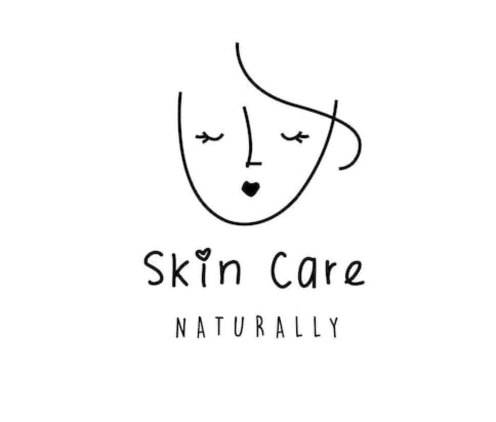
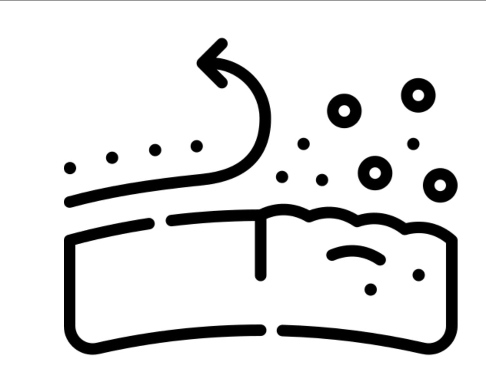
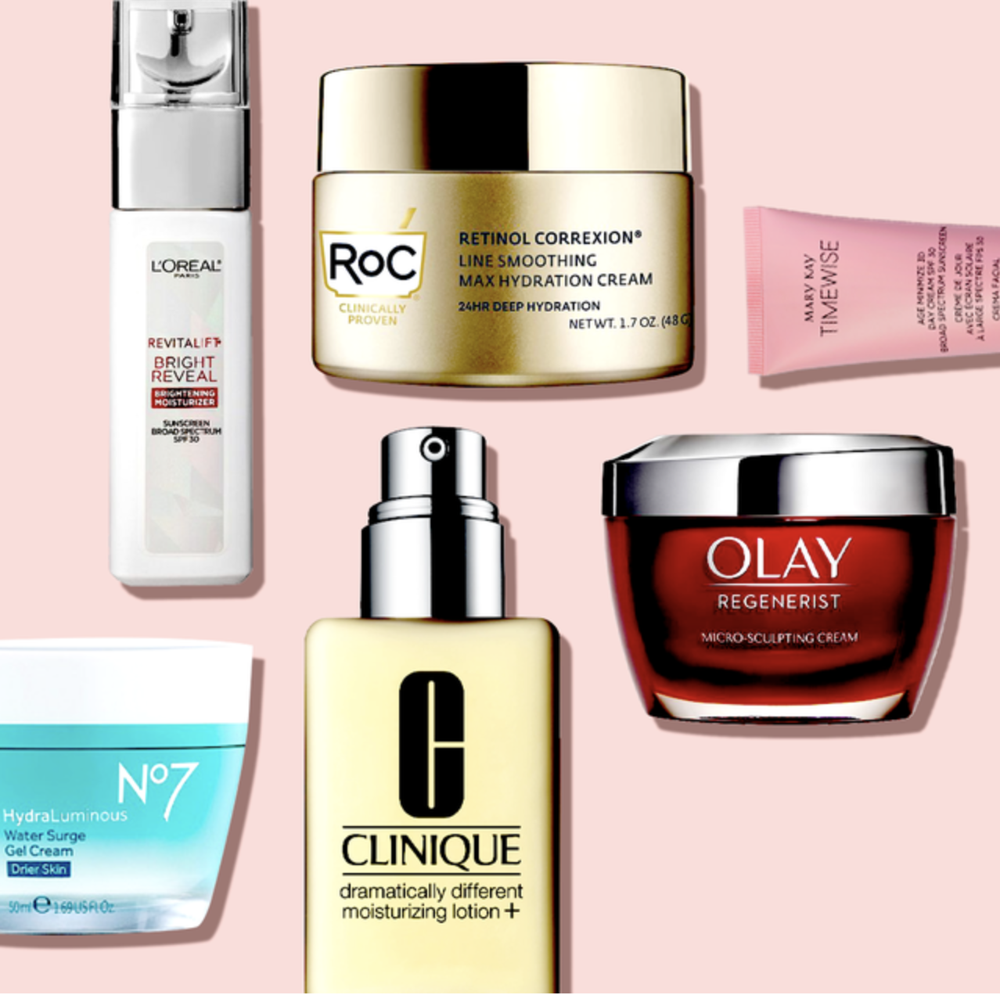
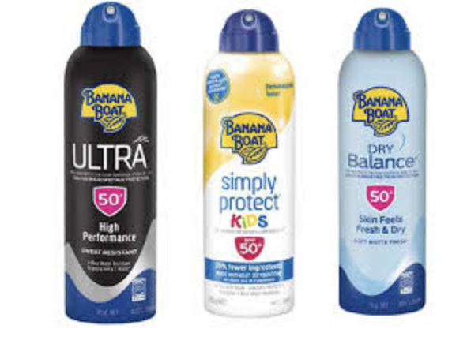

<!DOCTYPE html>
<html lang="en-ca">

<head>
  <!-- Set the page title -->
  <title>Assignment 02</title>

  <!-- Set the charset we're using to UTF-8 -->
  <meta charset="utf-8" />

  <!-- Set the screens default zoom / scale to 1 -->
  <meta name="viewport" content="width=device-width, initial-scale=1" />

  <!-- Specifies the document mode for Internet Explorer -->
  <meta http-equiv="X-UA-Compatible" content="ie=edge" />

  <!-- We are using a CSS Reset file to standardize browser default css -->
  <link rel="stylesheet" href="./reset.css" />

  <!-- This is where all of our awesome CSS code goes -->
  <link rel="stylesheet" href="./style.css" />
</head>

<body>
  <!--

    YOU HAVE TO MODIFY THE HTML TO BUILD YOUR AWESOME PAGE

  -->
  
</body>

</html>
</head>
<body>
  <h2 class="webname"> SkinCareNaturally🩷.ca</h2>
  <header class="header">
    
    
    <nav class="nav1"> 
      <ul>
        <li><a href="#" > Home</a></li>
        <li><a href="#" > About Us</a></li>
        <li><a href="#" > Contact</a></li>
      </ul>
    </nav>
  </header>
  <main>
   <section class="intro">
    <h1 class="info"> Welcome to SkinCareNaturally🩷.ca</h1>
    <p> It's crucial for humans to take good care of their skin health.
      There are seven layers to our skin, and the things you use may either
      benefit or make your skin progressively worse. Starting self care is never too late.
    </p>
    <p> Depending on what type of skin type you have; dry, oily, combination,
      & sensitive. You can figure out what cleanser is most suitable for you by
       running a test.</p>
      </section>
    <section class="herosection">
    
<h2 class="tableofcontents"> Table Of Contents</h2>
<section class="nav2">
<ul>
  <li><a href="#step1">Cleanse * ˚ ✦</a></li>
  <li><a href="#step2">Exfoliating * ˚ ✦</a> </li>
  <li><a href="#step3">Serums * ˚ ✦</a></li>
  <li><a href="#step4"> Moisturizer * ˚ ✦</a></li>
  <li><a href="#step5"> Sunscreen * ˚ ✦</a> </li>
  <li><a href="#step6"> Recommended Skin Care Lines * ˚ ✦</a></li>


</ul>
</section>
    </section>

    <section class="step1">
      <h2 id="step1"> Step #1: Cleanse  * ˚ ✦ </h2>
      
      <p> Cleaning is a crucial step, particularly in the evening.
        Numerous pollutants and dust are absorbed by our skin, eventually clogging pores.
        Your skin will be drawn to products more depending on the type of skin you have and how much care it needs.
        For instance, hydrating products are needed more for dry skin.  </p>


    </section>


    <section class="step2" >
      <h2 id="step2"> Step #2: Exfoliating * ˚ ✦ </h2>
      
      <p> Exfoliation is the procedure used to remove dead skin cells
        from your skin's surface. By enhancing absorption, exfoliation
        can make your skin look more radiant and increase the effectiveness
        of topical skin care products.You can use a physical or chemical exfoliate.
      </p>
    </section>
    


  


    <section class="step3" >
      <h2 id="step3"> Step #3: Serums * ˚ ✦ </h2>
      
      <p> Take a close look at your skin and identify your needs to
        help you decide which serum to purchase.
        Antioxidants are typically found in combination in basic
        serums.Choose a face serum with salicylic acid and retinol
         if you have oily, acne-prone skin. </p>
        


    </section>


    <section class="step4">
      <h2 id="step4"> Step #4: Moisturizer * ˚ ✦ </h2>
      
      <p>Your skin type influences how a moisturizer
        should feel on you. A light, non-greasy moisturizer
        works best on normal skin, whereas dry skin may require a heavier,
        creamier formula that is more likely to "lock in" moisture.
        Blackheads, bumpy skin, clogged pores, and excessive
        oil production are some indicators that you may be over-moisturizing.</p>
    </section>


    <section class="step5">
      <h2 id="step5"> Step #5: Sunscreen * ˚ ✦</h2>
      
      <p>One of the best and simplest ways to safeguard the health and appearance of
        your skin at any age is to wear sunscreen. Regular use of sunscreen
        aids in avoiding sunburn, skin cancer, and early aging.Sunscreen application
        is necessary every day. Even on cloudy days, the sun's rays can harm the skin
        because they are indifferent to skin tone. According to research, even exposure to
        the sun through a car window increases the risk of developing skin cancer.  </p>

       


    </section>
   
    <section class="step6">
      <h2 id="step6"> Recommended Skin Care Lines: * ˚ ✦ </h2>
      <ul>
        <li> Vegan - Pacifica & Youth to the People </li>
        <li> Affordable - The Ordinary & The Inkey List </li>
        <li> Luxury - La Prairie & Rodan Fields  </li>


      </ul>


    </section>


   


    <section class="form">
      <h3 id="Contact">Feedback * ˚ ✦</h3>
      <form>
        <fieldset>
          <legend>Personal:</legend>
          <label for="name">Name:</label>
          <input type="text" id="name" name="name" autocomplete="name" required/>
          <label for="email">Email:</label>
          <input type="email" id="email" name="email" autocomplete="email" />
        </fieldset>
      </form>
   
    <fieldset>
      <legend>Feedback  * ˚ ✦:</legend>


      <label for="topic">Was this helpful?:</label>
      <input type="text" id="topic" name="topic" required />
      <fieldset>
        <legend>Submit:</legend>


        <input type="checkbox" id="consent" name="consent" required />
        <label for="consent">I consent to the use of my feedback.</label>


        <input type="Submit" value="Submit Feedback" />
      </fieldset>
    </fieldset>
    </section>
    </section>
  </main>
  
  <footer class="footer">
    
    
    <nav class="nav1"> 
      <ul>
        <li><a href="#" > Home</a></li>
        <li><a href="#" > About Us</a></li>
        <li><a href="#" > Contact</a></li>
      </ul>
    </nav>
  </footer>
  <h2 class="webname"> SkinCareNaturally🩷.ca</h2>
   <section class="copyright"><p>&copy;2023</p></section>
</body>
</html>